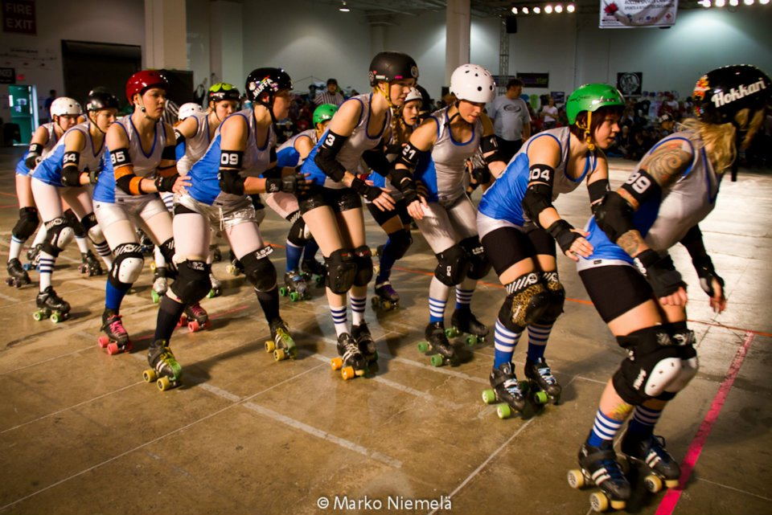

World Cup Interview: Team Finland
The next team to be interviewed from Scandinavia are Team Finland, who will be making a return appearance in the Blood & Thunder World Cup this year. After finishing in a very respectable 5th place in 2011, Suvi Hokkanen - Head Coach for Team Finland- has shared how her team are preparing for Dallas later this year.

1. Team Finland is filled with skaters from 4 different Finnish teams, as well as skaters from Sweden; England and USA! How did you organise the team selection process since your skaters come from so many different countries? We had our try-outs in August 2013 in Helsinki. Our skaters are very dedicated, and nearly all of them made it to the try-out weekend. There were only two skaters who couldn't come to the try-outs, but we were able to host an alternative try-out session for them. 60 skaters tried out, and after 2 days of skating we picked 30 skaters for the squad. All of the skaters were picked under the eyes of the coaching crew and we didn't need any video material in order to form our squad.
2. How often are you able to meet up, and what do you focus on to make the best use of your training time together? We have Team Finland boot camps every 2 to 3 months. The boot camps are weekends filled with skating, strategy and also getting to know each other. Last spring we focused on forming the final team for the World Cup and now as the roster is out, we are focusing on the overall tool box that we need in order to play well together as a team.
3. Several of the other European national teams have recently participated in tournaments to get in some extra practice ahead of the World Cup. What does Team Finland have planned? We have already played against Team Sweden in February. On our next boot camp, we will play against Tampere Rollin Bros, one of the men's roller derby teams in Finland. Many of the Bros skated in the Men's World Cup in Birmingham back in March, so they'll be an appropriate opponent to test our skills on. We do have little something special planned, but I still need to keep our plans a secret. Unfortunately, we are quite isolated, and the flights to/from Finland are expensive. The skaters have to travel a lot with their home leagues, and the travel expenses to Dallas are massive. We are glad that Finland has such a talented derby community, and we get to practise against high level teams on home soil before the tournament.
4. As a team which did participate in the 2011 World Cup, you already have experience of playing in a tournament. This must test your team mentally, as well as physically - how will you ensure that Team Finland stays motivated throughout the tournament? I don't think that the national team skaters need to worry about being motivated when they are skating for their country.
5. Given the expense of getting to Dallas for the World Cup, how are you raising funds and gaining sponsorship? We have applied for a fund from a Finnish organisation. They picked us for their September campaign, and if we get the most votes on their website, well be getting the fund we applied for. All the local leagues and our fans have been active in promoting the campaign. We've also been selling Team Finland merchandise, and we will bring some with us to Dallas as well. We have teamed up with roller derby companies too: we all skate in S-One sponsored helmets, and Radar Wheels is providing us with new wheels. A local skater, Ysi Musta from Lahti Roller Derby is coming out with a line of protective garments designed for roller derby, and she's letting us try them out. We're open for other collaborations as well, so just shoot us a message!
6. And just for fun, does your team have a mascot? If you don't, what would type of mascot would symbolise your national team? Most of the national sports teams in Finland are named after animals. For example the basketball team is known as wolf pack; ice-hockey as lions; footballers as owls. In the last World Cup we had silver shirts and people started to call us herrings. (BTW Herring is a really popular dish in Finland). We are our own mascots, power animals and heroes. Please bring your herring signs to Dallas, and cheer for us!
 Team Finland in action!
Image courtesy of Marko Niemela
Team Finland Roster
- OONA #00
- Only #1 CC
- Pygmi #101
- MIA #156
- Elina Ruhoranta #18
- Super Maria # 1UP
- Nina Erwes #28 CC
- Maiju Rinne #39
- Iiris Suominen #404
- Doomey B. Hind #4444
- Dominå F. Äkt #455
- The Blizzard #54
- A. M. Chaos #5
- Kira Horpi #56
- Sara Ekholm #604
- Rita Hateworthy #8
- T-Bag #9
- Linda #96
- Tsubutex #99
- Suvi Hokkanen - Head coach
- Jori Hämäläinen - Assistant coach
- Raisa Siivola
- Anna Miettinen
World Cup Interview: Team Denmark
The next team to be interviewed from Scandinavia are Team Denmark. This will be their first World Cup appearance, and they have already played in two tournaments recently to prepare for the challenge ahead.
Mai Olesen a.k.a Toxic Noir - Manager for Team Denmark - has been speaking to us to share how the team are preparing for the Blood & Thunder World Cup in Dallas later this year.
 Image courtesy of Team Denmark
Image courtesy of Team Denmark
1. Team Denmark is filled with skaters from 5 different Danish teams, and even a skater from Crime City Rollers in Sweden! How did you organise the team selection process since your skaters come from all over Denmark, and beyond?
First we had 4 training sessions where everyone that applied for a spot could come. These training sessions also included an off-skates strength program and a strategy session. After these sessions we had the try-outs, where we tested them in strength, understanding, rules, technique and scrimmage. This format made it possible for us to get to see the skaters in action quite a bit before the day of try-outs. For us, Team Denmark is also an opportunity to spread the knowledge [learnt in training sessions] to all the leagues in Denmark and move the sport forward here.
All try-outs and training sessions were held in Copenhagen. Organizing it all is a question of trying to make sure that the players and people involved know well in advance what dates to block out. Transportation is quite expensive in Denmark and as you pointed out the players come from all over the country + Sweden - and we also have our player Miss Mane who is from the Faroe Islands - so letting people know when and where is an important task.
2. How often are you able to meet up, and what do you focus on to make the best use of your training time together?
We have an activity every month which could be a training weekend, a bout or a tournament. At one of our activities we had the pleasure of having Olivia Coupe from London Rollergirls visit and coach us, which we really enjoyed!
We focus on teamwork, building an understanding of some basic plays we do, and also spend time to get to know each other as skaters and coaches. On the side of this, we have a strength and endurance training program to step it up.
3. I see that Team Denmark have recently played in a triple-header tournament with Team Norway and Team France, and you will soon be playing in a European tournament with 7 other teams. What are you hoping to learn from these experiences that you can take forward into the World Cup?
It was important for us to get some bout experience as a team so playing at the [triple-header] tournament was very useful for us. Many of the skaters had never played in a tournament before so it was great to get this opportunity. In this tournament our key focus was to learn to save energy and play smart, because after the first bout you´ll have another one to play! It was also an inspiring weekend to see how dedicated the other National Teams were and how they played. We got the chance to play people in different positions and to see how they reacted under pressure and with a loose schedule.
The European Roller Derby Tournament let us build on what we tested and established in Norway. It was an amazing tournament and we saw Team Denmark really coming together and getting some great learning experiences.
After these experiences we feel much more prepared for what awaits us in Dallas - still exited, still a bit nervous, but definitely much better prepared:)
4. Since Team Denmark did not participate in the 2011 World Cup, what are your aims for the tournament this year?
Oh, we fully expect to get our butts kicked...Royally!! But in true derby style we are looking forward to that :)
There are many teams playing in the World Cup that we simply have no idea how good they are. So we will get in there and compete hard for one jam at the time. Much has changed in the derby world since 2011, but our goal is to be one of the top 5 "new" teams that are participating in the tournament. And of course that we will get to play some good games. Other than that we are very committed to having the best time ever and soak up all everything that we learn. We want to bring this knowledge back home as a foundation for development in roller derby on a national level in Denmark.
5. Given the expense of getting to Dallas for the World Cup, how are you raising funds and gaining sponsorship?
We are doing what everyone else is doing I think: selling merchandise and hosting a 'crowd funding' page. Our latest plan is to organize a fundraising event with a scrimmage and a raffle or auction.
We have contacted a lot of Danish companies for sponsorships, but without luck. Denmark doesn't really have a great history or culture for sponsorships in upcoming sports (which roller derby is in DK) , but we will keep chasing money - so who knows, we might succeed yet. We also got a little bit of monetary support from the Danish Roller Skating Union. We had a raffle at the European Roller Derby Tournament so that also gave us a little money. We are currently sponsored by Atom Wheels and S-One helmets as well which is great.
6. And just for fun, does your team have a mascot? If you don’t, what would type of mascot would symbolise your national team?
We don't have a mascot but if we did it would be either a lion, like the one we have on our uniform. Or maybe a hotdog or a Carlsberg beer mascot!
 Image courtesy of Team Denmark
Image courtesy of Team Denmark
Team Denmark Roster
- Hald, Copenhagen Roller Derby
- Beastie Bob, Copenhagen Roller Derby
- Bay, Copenhagen Roller Derby
- Cater, Copenhagen Roller Derby
- Durakill Bunny, Copenhagen Roller Derby
- Fjabbeline, Copenhagen Roller Derby
- Kimmer, Copenhagen Roller Derby
- Rode, Copenhagen Roller Derby
- Jelly, Copenhagen Roller Derby
- LOL, Copenhagen Roller Derby
- Miss Mane, Copenhagen Roller Derby
- Pedersen, Copenhagen Roller Derby
- Yaya Woosh, Copenhagen Roller Derby
- Arachna, Aarhus Derby Danes
- Kris, Aarhus Derby Danes
- Keller, Aarhus Derby Danes
- Panzer, Roller Derby Århus
- Deenfeldt, Crime City Rollers, Malmö
- Panini, Odense Rollergirls
- Möxie Crüel, Aalborg Roller Derby
- Team manager: Mai Olesen
- Head coaches: Emma Hedman (Sabo) & Henrik Levinsson (Slutty Summers)
- Assistant coach: Tore Brynaa
World Cup Interview: Team Norway
Kicking off the Scandinavian interviews in our World Cup series, we caught up with Team Norway right after they played in a European Roller Derby Tournament. Signe Sletmoen has kindly shared how her team are preparing for their first appearance in the Blood & Thunder World Cup.
 Image courtesy of Team Norway
Image courtesy of Team Norway
1. Team Norway is filled with skaters from 2 different Norwegian teams, as well as skaters from England and USA! How did you organise the team selection process since your skaters come from so many different countries?
When we first started talking about gathering a national team, we asked around to locate Norwegian roller derby players in foreign countries. We also announced that we were looking for three further positions: two coaches and one Team Manager. We invited everyone that fitted the criteria along to two weekend sessions where we worked on skills, drills and scrimmages. We than had a two-day try out where the coaches and the team manager chose a roster of 20 players.
2. How often are you able to meet up, and what do you focus on to make the best use of your training time together?
Unfortunately we have not meet up as often as we would have liked to. This is due to both travelling distance and economy [cost]. But we had the try out in February, and met once in April, and then again in August. Since we have such little [training] time together, we focus mainly on getting to know each other on track and playing together as one team.
3. I see that Team Norway have recently played in a triple-header tournament with Team Denmark and Team France. What did you learn from this experience that you can take forward into the World Cup?
We are skaters from different leagues and teams, with different tactics, track language and derby style. We wanted to use the tournament as an opportunity for us to play together as one team; get to know each other; and to figure out how we can make the most of our skills and players.
In the tournament, we played against Team Denmark and Team France for the first time. They had very different strategies so that diversity was a good learning experience for us. We constantly had to work on being able to switch it up, and to get used to the speed, strength and tactical qualities that more experienced teams possess.
4. Since Team Norway did not participate in the 2011 World Cup, what are your aims for the tournament this year?
We go in to this tournament without focusing too much on rankings and results. Our goal will be to play our very best derby, learn a lot - and hopefully win several bouts! Since it is our first World Cup, we have to see it as a learning experience, but we do look forward to getting some real fierce resistance and great challenges - both as individual players and as a team. This will be a great way to grow Norwegian roller derby as a sport.
5. Given the expense of getting to Dallas for the World Cup, how are you raising funds and gaining sponsorship?
We have a 'crowd funding' project, set-up coupons to use when buying tickets online, and we have also managed to get some sponsors. A local tattoo studio - Lucky 7 - have arranged a fundraiser for us. The Norwegian Skating Association is also helping out with the finances, and that's only to mention some! But I think all of us are relying on getting a little bit extra from Santa this year. Hopefully everyone has behaved the last year!
6. And just for fun, does your team have a mascot? If you don’t, what would type of mascot would symbolise your national team? We don't have a mascot (yet), but I guess our mascot would be something like John Snow. We are after all the once defending the wall in the north! It could also be a really fluffy ice bear or a big, hairy musk. You'll see when we meet in December.
 Team Norway Roster - World Cup 2014
Team Norway Roster - World Cup 2014
Image courtesy of Team Norway
UKROC: Chasing Katy speaks.
 UKROC 2014 Attendees (MDP Images)
UKROC 2014 Attendees (MDP Images)
What a weekend! The two days of UKROC at the University of Warwick in Coventry have been some of the most positive, and productive, during my time in roller derby.
The idea for a UK-based conference came out of UK league discussions at EROC. Attendees had felt like they had got a lot out of those sessions, and they wanted to see something similar on offer in the UK. So the UKRDA decided to take on the task of putting together a UK conference, with the help of many people from leagues around the country, who brought in speakers, arranged sponsorship, helped with PR, ticket sales, competitions, booking the venue and making arrangements, basically every job that goes into arranging an event of this scope.
Even with all the many hours of work put in by every person in the organising crew, I have to admit, in the run up to the event, I had some apprehensions. Would people show up? Would they feel that they got value for money? Were we offering the right sessions? Looking at the schedule I felt sure that people would be happy with the first UKROC, but you never know how things will be received.
We managed to get some massive names from the sport involved – from Bette Noir, who founded London Rollergirls, to Bloody Mary, the executive director of the WFTDA – but we also tried to include people who were less well-known, but provided a wide range of skills that would be helpful to league organisers and skaters.
Among the Scottish representation speaking over the course of the weekend was Glasgow Roller Derby's Mistress Malicious (who is the chair of the UKRDA), myself and ARRG's Crazylegs, whose session on coaching skaters through their minimum skills received a lot of positive feedback.
Delegates from Scotland also included people from GRD, ARRG, Fierce Valley Roller Girls, Dundee Roller Girls, Mean City and Doonhame Derby Dolls. It was great to see so many people from north of the border making the long trip south. Although for some of us, the excuse to stop at Tebay was a big part of that!
 Auld Reekie & Team Scotland's CrazyLegs leading a session. (MDP Images)
Auld Reekie & Team Scotland's CrazyLegs leading a session. (MDP Images)
Some of the most popular sessions over the weekend were Kitty DeCaptitate's team cohesion and mental prep talks, a session on conflict resolution led by Hannibal Lecturer of Kent Roller Girls, who teaches HR in her day job and was able to bring that knowledge and make it relevant to roller derby, and Bette Noir's creatively titled “Herding Cats and Preparing for Tomorrowland”.
Other sessions focused on bout production and filming bouts, using social media to promote your league, organising tournaments, and face to faces with the UKRDA directors, the president of MRDA, Grambo, and WFTDA's Bloody Mary. Grambo and Bloody also attended a lot of sessions to listen in, and it was great to see them putting their views and opinions forward.
The University of Warwick surroundings were welcoming and delegates enjoyed fantastic meals and snacks over the weekend, and a setting that encouraged people from different leagues to sit together and chat about some of the themes of the sessions and make connections which will hopefully last long after UKROC.
What was clear throughout the weekend was that everyone was enthusiastic about seeing their leagues, and the wider derby community, grow and develop to the next level. The veteran leagues were happy to share their experience with the newer leagues, who were happy to accept any advice and offers of help that came their way. FVRG's Dita Von Cheese held that the event was "brilliant, absolutely buzzing with new ideas and skills to share with the league back home", and was enthusiastic to would return again next time
 The attendees, attentive. (MDP Images)
The attendees, attentive. (MDP Images)
One of the biggest positives for me was the engagement of the mens' leagues in attendance. At the UKRDA we have been trying to get them more involved and find out what they want to see for the development of the sport for men, and getting them together in a mens' league face to face was the ideal way to achieve that. They are now working together to decide what their priorities are moving forward, in a way that us telling them what they should want would never have achieved. Mean City's BruiseDog echoed this perspective, telling us that "UKROC was exciting and informative; from a men's derby perspective I found it really useful to discuss the challenges and the potential solutions face to face with other [men's derby] leagues, and our female counterparts."
Since UKROC, the feedback has been almost universally positive. With the event in its infancy, we had all hoped that we would have a successful event, but I don't think any of us believed that it would go as well as it did.
As for next year? At this point, the organisers are hopeful that UKROC 2015 will be a goer, but we are looking at funding possibilities before we commit to doing it again!
World Cup Interviews: UK and Ireland
Over the last week, our Blood & Thunder Roller Derby World Cup tour covered The UK and Ireland. Over the weekend, Ireland, Wales and Scotland (and Team West Indies) played against each other in the Road to Dallas tournament, with Scotland placing 1st, ahead of Ireland in second place, and the hosts, Wales, taking up the 4th place position, despite a close game against third-place West Indies. If you missed any of our interviews, here’s a recap…
This week we will be hopping over to Scandinavia to interview the teams from Norway, Denmark, Finland and Sweden!
World Cup Interview: Team England
 Team England logo by Sally Felton
Team England logo by Sally Felton
Can you tell me a bit about how your team selection process worked?
England's team selection went through an extensive tryouts process to select the training squad, then the management team selected the most suitable players for the World Cup roster based on performance and which players worked well together, over the course of games and training throughout 2014. The management staff have been selected through application and a rigorous process as well.
How are your training sessions going?
Training sessions have been really fun! It's been really refreshing working with a range of skaters from around the country and great to collaborate and learn even more from training with different styles.
Training occurs around every 6 weeks or so and luckily sessions don't clash with league training - it just means more skating in the week!
Have you had to alter your personal training as part of you World Cup preparation?
Preparation for the World Cup actually falls at a fortuitous time for me, as it's just after the long period of training that London Brawling have for WFTDA Playoffs and Champs, so I'll just be extending the training through till December.
This includes regular DSA sessions, which mix weights, ladder training and lots of tough circuits, additional skating sessions and eating healthily.
And then having a very indulgent Christmas!!!
How have you been fundraising and achieving sponsorship?
We've had some great events like the Red V White game, and loads more coming up over the autumn, like a special comedy fundraiser with famous roller derby supporter Phill Jupitus, and the Sur5al tournament. Get your tickets and sign up via the Team England Facebook!!
What teams are you most looking forward to playing?
Gosh everyone! It's just great to be part of such a global celebration of the sport.
What are you most looking forward to about the World Cup this year?
See above! Although I am an extra bit of excited to meet Team Japan YELLOW FEVER - there's gonna be loads of photos.
Team Manager Laura Jones also spoke to us about the recent announcement from Team England to no longer be part of UKRDA;
Essentially Blood &Thunder have different affiliation criteria to UKRDA. All 32 of the training squad are eligible under Blood & Thunder World Cup criteria, but not everyone would be under UKRDA.
This means that if England Roller Derby adhered to UKRDA criteria, we'd be putting ourselves at a disadvantage that no other non-UK squad will face.
UKRDA understandably don't wish to change their criteria at this late stage.
Our dealings with the UKRDA Board have been very pleasant, there's no bad feeling and we both genuinely wish each other well.
The Team England Roster
Bloxie Blackout Ella Storey Fay Roberts Ruth Wilkinson Hell Vetica Black Jen Sykes Kamikaze Kitten Kid Block Kristen Lee Lexi Lightspeed Lorrae Evans Missy Rascal Olivia Coupe Amy Ruffell Rogue Runner Shaolynn Huynh Stefanie Mainey Terri Sudron Trisha Smackanawa Gemma Campbell
Bench Coach: Ballistic Whistle Assistant Coach: Rollin Stone R Team Manager: Laura Jones
World Cup Interview: Team Scotland
This weekend Scotland will be competing in The Road to Dallas alongside Team Ireland, Wales and West Indies, having already played two warm-up bouts (against the Euro-Stars and Hot or WOT).
 Team Scotland logo by Admiral Attackbar
Team Scotland logo by Admiral Attackbar
On the topic of team selection - Can you tell me a bit about how your team selection process worked?
It was a long and thorough process. There were round one tryouts, round two tryouts and a final top 20 training team picked as a result.
The tryouts were open to anyone and were a great way to practice with people from leagues all over the UK.
It never felt tense or pressured and everyone was very relaxed. The scrims were great fun!
Is it difficult having people from different leagues get together for training?
Having skaters from various leagues undoubtedly makes it tricky to all meet up and practice but we’ve managed to get a good few practices in so far with more planned before the tournament.
The training sessions have been tough but excellent. It’s such a privilege to be skating such talented women.
We all have very packed derby calendars as it is so free weekends are like gold dust!
How have you been personally preparing for the World Cup?
I’ve had a complete diet overhaul since selection which has made a huge difference to my fitness and agility. I’ve also been working on upper body strength at the gym.
Mental preparation has also been a big part of my training.
Flying to the USA from anywhere is expensive as a team, how have you been fundraising and achieving sponsorship?
We have some wonderful sponsors including S1 helmets and Atom wheels. There have been a few fundraisers including bouts, a bootcamp and some fabulous merch! We’ve also received extremely generous donations over at http://gogetfunding.com/project/get-team-scotland-to-dallas
We still have a few events up our sleeves before we head out as well. Keep your eyes peeled!
What teams are you most looking forward to playing?
I would LOVE to have the opportunity to play any of the top 3 finishers from the last world cup (USA, Canada, England).
You always learn so much from a really tough game.
What are you most looking forward to about the World Cup this year?
Watching the new teams that have entered this year will be awesome. Also, playing and hanging out with all my Team Scotland team mates.
You skated in the World Cup in 2011; has this had an impact on your training for December?
I feel like Roller Derby is still changing in such a way that all you can ever do is work as hard, focus and train. Nobody will really know what to expect until we get there and it will be a million miles away from the derby we were playing 3 years ago.
The Team Scotland roster
0 Louise Kerr
09 Jill Simpson
11 Parry
111 Mackenzie
1111 Jenny Gow
182 Jill Stephen
22 Grace Maclean
28 Lauren Bianchi
210 Rogue
3 Cider
39 Davis
4 Megan Hyndman
69 Laura Liston
85 Skinner
87 Caitlen O'Carroll
931 Rebecca Ryan
F104 Marshall Lawless
Bench coach - Coach Noble
Line up Manager - Murphy
Team Manager - Jill Antonic
Sur5ors: Charity Tournament
While Team Scotland are off to Wales this weekend to skate in the Road to Dallas, the rest of us would be bereft of derby action if it weren't for the foresightedness of Alison Renton - following up last year's charity bout with a whole Sur5al tournament this time around!

Sur5ors will see teams from
Auld Reekie Roller Girls Bairn City Rollers Blackpool Roller Derby Team Dundee Roller Girls Fierce Valley Roller Girls (twice) Furness Firecrackers - Roller Derby League Glasgow Roller Derby (twice) New Town Roller Girls Team Crazy Legs: Roller Derby, Mental Health & Chronic Illness
to compete in the usual 5-person team endurance derby that is Sur5al.
All profits will go to Glendrick Roost Animal Welfare Centre and St Andrew's First Aid.
Tickets are still available at: http://www.brownpapertickets.com/event/838260 , and the event kicks off at 11:30 am at The Peak, Stirling on Saturday.
World Cup Interview: Team Wales
Team Wales will also be competing in The Road to Dallas this weekend with Scotland, Ireland and West Indies, and are, in fact, the hosts of the event!
 Team Wales logo by Dafydd Williams
Team Wales logo by Dafydd Williams
How are your training sessions going, have you had to take time from your own league training for Team Wales training?
The team Wales training sessions are very hard work but a lot of fun. We train about twice a month either in South Wales or Gloucester area .
I feel I have learnt so much from the coaches and the other skaters. Having such a range of skaters from different leagues provides us with such a great range of strategy and game play, we all get along great and have really bonded over the last few months.
My home league the Wirral Whipiteres are very supportive of my training commitment to team Wales. Sadly I have had to take time from training and bouts to try out and train, but my home league have been very accommodating .
In addition to Team Wales training, how have you been preparing for the World Cup?
To prepare for the world cup I have been using ankle weights at my home league training to build up my endurance and power as well as skating out doors about twice a week (weather permitting).
I have also been trying to eat healthier as a result of doing more training. I am interested in doing cross training as a few of our Wales girls cross train by doing yoga/aerobics/gym/swimming etc but finding the time to do that has been difficult so far.
How have you been fundraising and achieving sponsorship in order to help with the expense of travelling to Texas?
To raise funds for training/funds to attend the world cup I have recently held a cinema night, a mega raffle and coached some local leagues.
The cinema night was held at my home leagues local after party venue "Mistys", we had some footage from wwrd vs nwrd and Team Wales vs Blitz dames. Of course we had cake too!
For the mega raffle I sold tickets to lots of skaters from a whole range of leagues. Some awesome derby shops such as (bootlegbrawlers, rollerderbycity, grandslam and Queens of the sin bin) and local leagues were very keen to donate prizes to help. I really cant thank them enough!
My next fundraising project is to auction off a fully signed Southern Discomfort t-shirt, which the lovely Rolling Thunder organised!
What teams are you most looking forward to playing?
I'm really looking forward to playing team Germany. I recently saw them at the womens euro's in Belgium, their play was very technical and they worked well together.
What are you most looking forward to about the World Cup this year?
I am really looking forward playing some of the best skaters in the world. The world cup is the pinnacle of roller derby. To be a part of it is really amazing and I cant wait for the adventure, its a new chapter in my derby life which all skaters dream of.
Team Manager Dorkmistress also told me the process involved for Team selection;
The UKRDA ran an election process for our Head Coach, Assistant Coach, Lineup Manager and Team Manager. Candidates were asked to apply describing their experience and how they would approach the role. UKRDA member leagues then voted to elect the best candidates. The Management team were elected in two stages in 2013, and we unfortunately had to rerun the elections for Head Coach and Assistant Coach in 2014 as the initial coaches stepped down.
We worked with the UKRDA again to set in place the selection criteria and timetable for the skater selection so that it was comparable across the home nations. We had first round tryouts in South and north Wales in Jan 2014, and the second round tryouts were held in March. We had 60 skaters try out and we selected 27 for the Training Squad.
Baby Cheesus Beatrix Blaze of Gory Buccaneer Betty Fear Glenys the Menace Gin n Sonic Haman Jen-Clawed Van Slamme Jolly-Pop Lockhart Marie Bayonet Mort Ireste Optimus Snail Steflon Sleazy Rider Talula Trouble ThunderKat Voodoo Ray
Team Manager - D orkmistress
Head Coach- Ben Phillips
Lineup- Professor Moriarty
World Cup Interview: Team Ireland
Team Ireland will be playing this weekend in The Road to Dallas, competing against Teams Scotland, Wales and West Indies.
Fiona Carton also known as Malibruise Stacy will be skating for Team Ireland in the 2014 Blood and Thunder World Cup.
 Team Ireland logo (Elaine Snowden and Ann Prendville)
Team Ireland logo (Elaine Snowden and Ann Prendville)
Can you tell me a bit about how your team selection process worked?
The Irish Roller Derby Association (IRDA) looked after filling in our coaching staff positions – they accepted applications for team coach, assistant coach, line-up manager and team manager. All the IRDA member leagues then voted Sin, Kitty, Belle Igerent and Tits in to their roles.
Once the coaching staff were in place, try outs were scheduled for the start of February in Dublin – there were about 50 or so skaters physically trying out and about another 15 video submissions.
Try outs were one full day, broken up into individual skills, endurance, offence and defense drills, and ending with scrimmage. From the try outs a 32 skater training squad was put together.
How have your training sessions been, have you had difficulties getting the team together for training?
So far the training sessions have been going great! It's difficult getting people from different countries together – especially when everyone already has a lot of their own league commitments, some of which might clash with Team Ireland. We tried to reach a compromise by training every two months – but having the training over the whole weekend to really get the most out of it. Another measure we've taken to make it easier is trying to spread out where we're having training sessions – so far we've trained in Dublin, Cork and Birmingham.
I've been lucky that Team Ireland training has only clashed with my league training – other girls in the squad have had training weekend's clash with their home team's games which puts them in a position of having to chose.
Playing in the World Cup will be very strenuous, How have you been preparing?
I've definitely upped my off-skate training- mostly focusing on weight training a couple of times a week and occasionally when the weather is decent going for a run. I've been lucky in that my home team (Dublin Roller Derby) has also made the decision to work on our strength and fitness as a team – having our whole team work out together is extra motivation and support!
I also try to be good and get to a yoga or pilates class once a week – but it's hard to fit in with everything else. Nutrition-wise, I've been keeping up a high protein diet to fuel my body for all this extra exercise – so I've been eating a hell of a lot of chicken, eggs and veggies!
Flying to the USA from anywhere is expensive, how have you been fundraising and achieving sponsorship?
We've been trying a few different ways to raise funds for the squad. We ran two bootcamps in Ireland this year which were really successful. We've also held open bouts where proceeds have gone to our travel funds and we have t-shirts we've been selling at different events around Ireland and the UK. We're working with some companies to help with sponsorship (S One are helping keep our heads safe with helmets!) – but of course our welcoming more! We also ran a really successful IndieGoGo campaign with limited edition merch which raised over €4500! We're so grateful to everyone who contributed.
What teams are you most looking forward to playing?
I guess everyone wants the honour of playing the current World Cup title holders – USA, that would be deadly!
I'd also love to have a rematch against Finland. I was in the crowd watching the last world cup and the Ireland – Finland game was my favourite game of the tournament!
What are you most looking forward to about the World Cup this year?
I'm excited to see the growth of roller derby around the world – seeing how far the 13 countries have come since the last world cup in 2011 and watching the 17 countries who are competing in the world cup for the first time.
The Team Ireland roster

{kind=link}